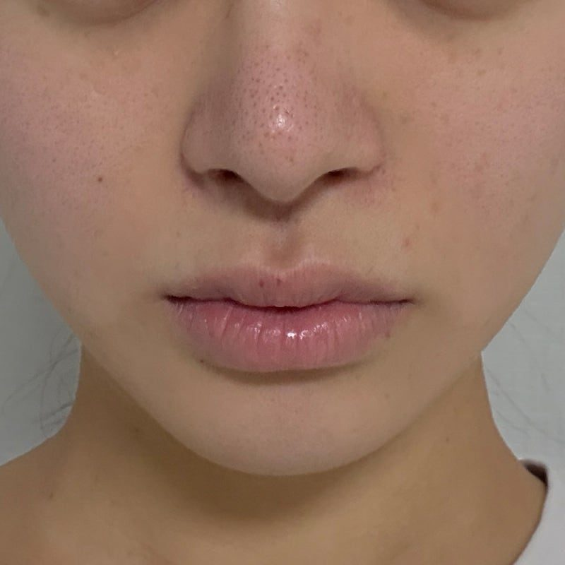
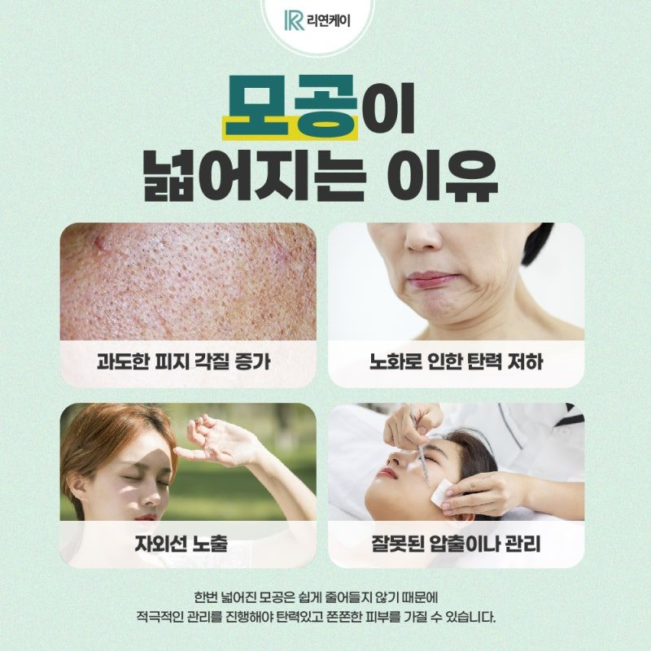
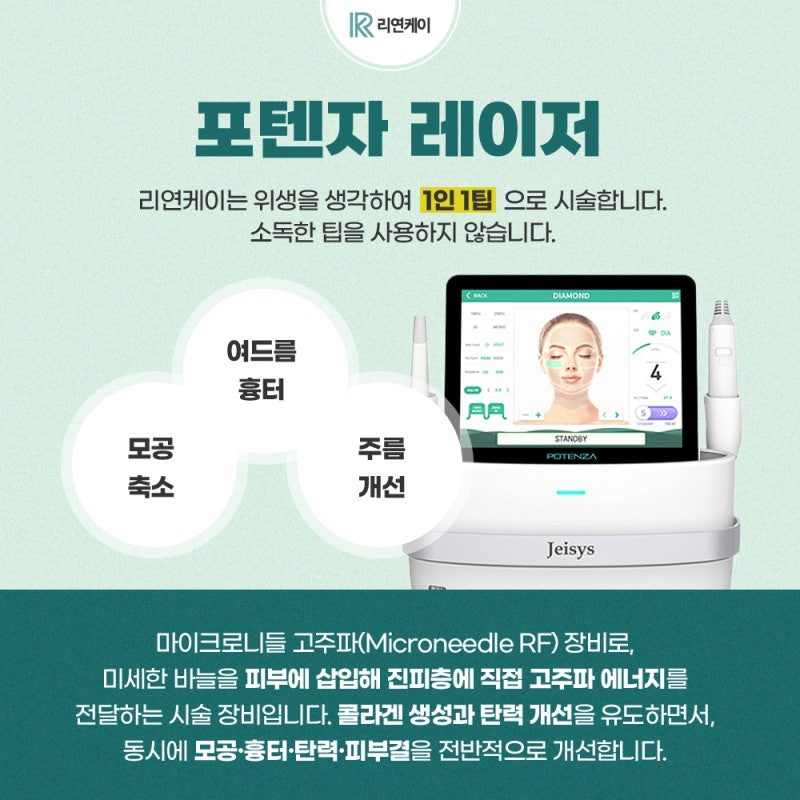
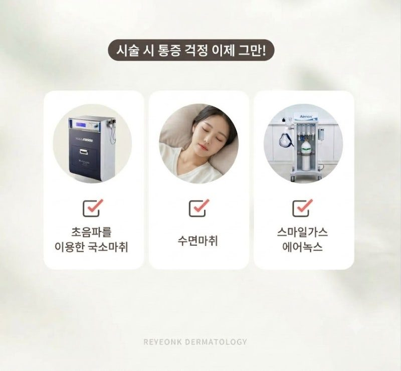
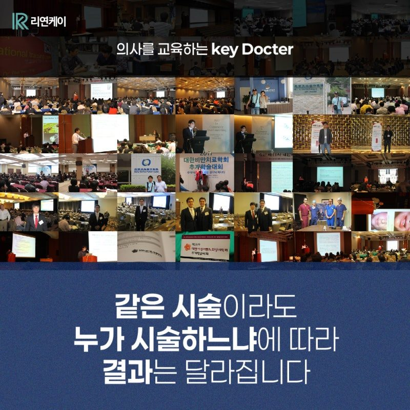

공들여 화장해도 파운데이션이 끼고, 모공이 도드라져 보여서 속상하신가요?
피부가 바쁜 편도 아닌데 넓어진 모공 때문에 지저분한 인상을 준다면, 모공축소 레이저가 답이 될 수 있습니다.

모공은 자외선이나 과도한 피지 분비 때문에 커질 수 있지만, 누구나 나이가 들면서 발생하는 피부 노화로 탄력이 떨어지고 늘어집니다.
그래서 포텐자 등 모공축소 레이저를 이용해 진피층 내 콜라겐 밀도를 높여, 모공 축소와 피부 리쥬비네이션(Rejuvenation) 효과를 동시에 얻는 시술이 필요합니다.

포텐자 레이저는 RF 고주파 마이크로 니들을 피부 속에 삽입해, 지정된 깊이에 고주파 에너지를 정밀하게 전달하는 프락셔널 시술입니다.
피부 속 콜라겐과 엘라스틴 조직의 재생성을 촉진하여 다음과 같은 효과를 기대할 수 있습니다.

병원마다 시술 방식에 차이가 있지만, 최소 600샷 이상 시술받으시는 것을 권장합니다.
그동안의 경험에 비추어 보면 포텐자 600샷 정도 받으셔야 환자 만족도가 좋았습니다. 비용을 맞추기 위해 적은 샷 수로 진행하거나 너무 빠르게 건성으로 시술하면 원하는 효과를 보기 어렵습니다.
포텐자 권장 주기는 4주 정도 간격으로 3회 시술입니다.
피부 탄력은 점차 떨어지므로 1년 단위로 꾸준히 관리하시면 매끄러운 피부결을 오랜 기간 유지할 수 있습니다.
시술 전 연고마취로 어느 정도 통증을 억제할 수 있습니다.
하지만 찌르는 통증을 잘 느끼시거나 통증에 대한 두려움이 있으시면, 초음파 국소마취나 에어녹스 등 통증 억제 프로그램을 함께 받으시는 것을 추천합니다.

리투오(Re2O), 셀르디엠, 쥬베룩, 리쥬란힐러 등은 영양 성분을 진피층에 직접 공급합니다. 피부층을 강화하고 탄력 개선 효과를 높여, 포텐자와 함께 시술하면 만족도가 높습니다.
잔주름 개선 및 모공 타이트닝 등 시너지 효과를 더해, 더욱 매끄럽고 물광 나는 피부로 개선할 수 있습니다.
완전 액상화된 PCL 성분을 콜라겐 부스터로 사용해 피부 스스로 콜라겐을 생성하도록 유도합니다. 잔주름과 탄력 개선에 도움을 얻을 수 있습니다.
10월 한 달간 7cc 39만원 (부가세 별도)| 샷 수 | 가격 |
|---|---|
| 포텐자 600샷 | 40만원대 |
| 포텐자 1000샷 | 60만원대 |
10월 한 달간 진행하는 특별 가격 이벤트입니다. 이 기회를 놓치지 마세요.
같은 포텐자 레이저라도 누가 시술하느냐에 따라 결과가 완전히 달라집니다.

나만의 모공축소 시술을 경험할 수 있습니다.
한번 넓어진 모공은 자연적으로 되돌아가지 않습니다.
리연케이의원에서 나에게 딱 맞는 모공축소 레이저 맞춤 플랜과 합리적인 이벤트로 고민을 해결해 보세요.